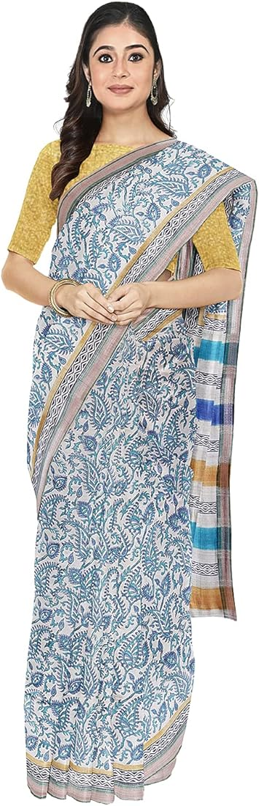

An eminent geographical indication, Kuchai silk saree find their home in the state of Jharkhand.
Kuchai silk is a local fabric that originated in Jharkhand's Kharsawan-Kuchai and Seraikela areas. It is made from cocoons grown on Arjun and Sal trees. Kuchai silk is a variant of Tussar silk, which is also known as "Wild Silk". Tussar silk is produced from a wide-winged moth that feeds on wild forest and is yellowish brown in color. Kuchai silk is the first Indian fabric to receive an international organic silk registration.
Kuchai silk sarees are made from the cocoons of silkworms that live on the Sal and Arjun trees in the Kharsawan region of Jharkhand, India. Kuchai silk is a type of Tussar silk, which is also known as "Wild Silk". The cocoon is the first Indian fabric to receive an international organic silk registration.
